Overview
The Asset Viewer is one of the two main tools for working with assets, and in some cases, for creating them. It offers a vast array of parameters and capabilities. In this article, we’ll cover the basic principles for new users.
Basic Workflow in Asset Viewer
Working with Assets
The interface is organized into three main panels:
Control Panel
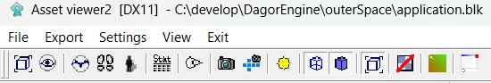
Properties Panel
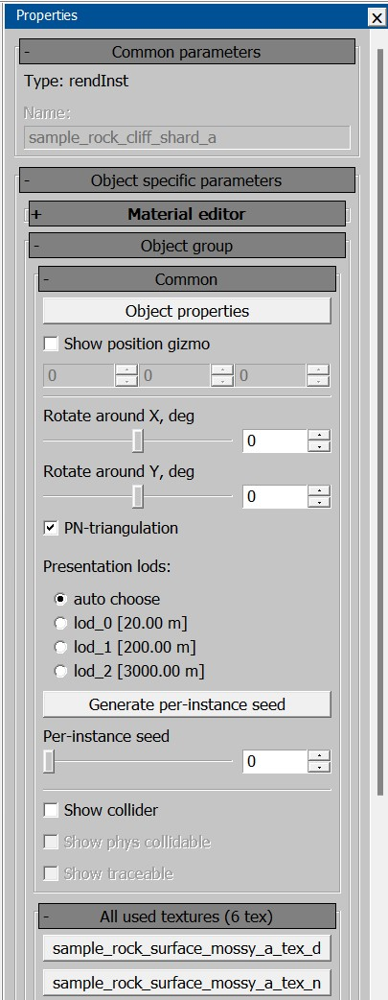
Viewport Settings Panel
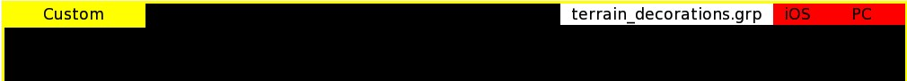
Control Panel
The most frequently used features in this panel are the Sun and the Console buttons.
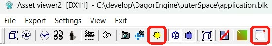
Console: This is your go-to tool. If something isn’t displaying correctly, don’t just report “it doesn’t work” – check the console first. You’ll be surprised how often it flags issues like duplicates and LOD errors.
Sun: A set of environment management settings (including service textures). Let’s dive deeper into its parameters:
Settings – Sun settings.
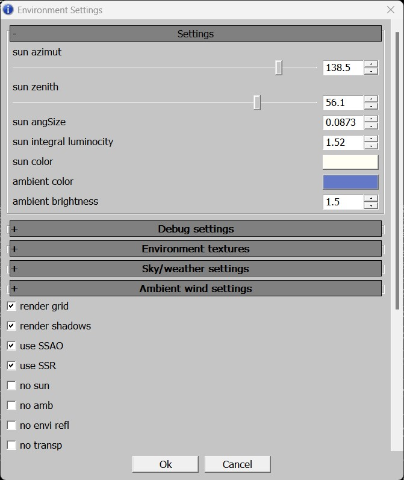
Debug Settings – Debug modes.
You can choose different model display modes to check for issues.
Most commonly used are per-channel modes (diffuse, normal, smoothness, and metallness) and albedo_ao, to check black-and-white range conformity.
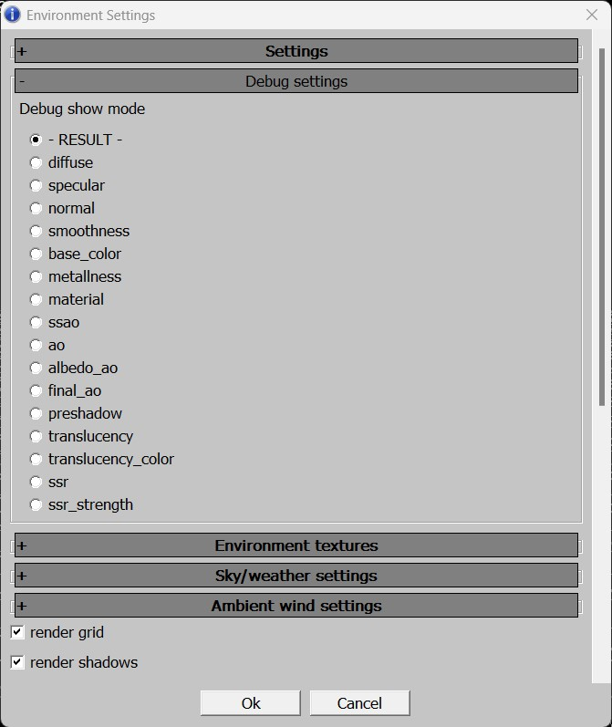
Environment Textures:
envi snapshot – Assign a texture that applies lighting properties from a specific location (first, create this texture in that location).
background texture – Add a custom background in
.ddsformat (works when an environment texture is connected).paint details texture: – Required for daNetGame-based games, which supports multiple paint textures. To see the correct color of an object, connect its paint texture here. War Thunder only uses one texture, which loads automatically in Asset Viewer.
background texture stretch – Background texture tiling.
reflection texture – Reflection texture, you can connect a cubemap, but it only works with an environment texture).
Level BLK (for microdetails texture): Necessary for War Thunder, where microdetails vary by map. If your assets appear black or with incorrect microdetails in the daEditor, connect the
level.blkfile for the appropriatelevel.blkfiles are located at\<project_name>\develop\gameBase\levels. In daNetGame-based games, microdetails load automatically, so no manual setup is needed.
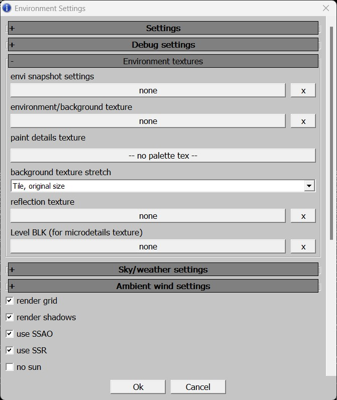
Sky/Weather Settings – Lighting and time of day settings.
Limited in scope and rarely used, but be sure to set a weather preset during the initial setup (it’s off by default).
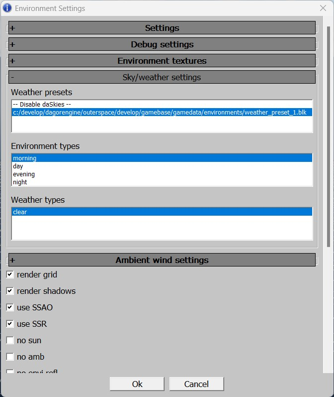
Ambient Wind Settings.
Direction – Wind direction
Strength (Beaufort) – Wind speed in Beaufort.
Noise strength (Multiplier of strength) – Multiplier of wind gust strength.
Noise speed (Beaufort) – Wind gust speed.
Noise scale (Meters) – Multiplier of wind gust size
Noise perpendicular – direction of wind gust movement
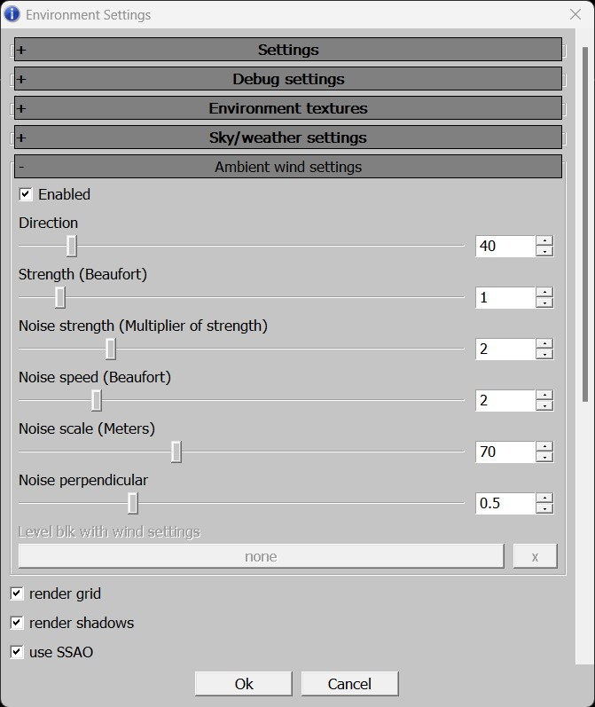
Note
Wind effects are only applied to assets with
treein their name. Although not all assets have advanced wind, all vegetation assets created after 2022 include wind effects.Several Display Settings.
Usually, the settings shown in the image below are enabled.
Previously, disabling all post-effects and enabling no
postfxwas the only way to view a more accurate polygon count:In War Thunder, this provided a clear display with honest polygon counts.
In daNetGame-based games, the image was unreadable, but the polygon count was accurate.
Now, this is unnecessary, as the asset statistics are sufficient without these workarounds.
Shadow Quality – Adjusts shadow quality (rarely needed).
Render Envi Entity – Allows you to load a background asset into Asset Viewer and display everything else alongside it. Useful, e.g. for checking how your tank looks in a hangar or comparing the size of two assets.
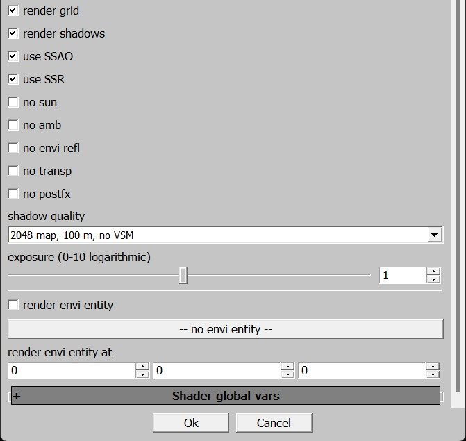
The other parameters are typically not needed.
Properties Panel
Let’s look at its key parameters:
Common Parameters:
Object type (Render Instance, prefab, texture, decal, etc.).
Object name.
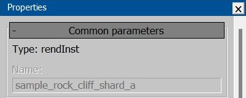
Object Specific Parameters:
Rotate object horizontally.
Rotate object vertically.
PN-triangulation – Geometry tessellation with
rendinst_clipmapmaterial. The closer the camera, the more detailed the object becomes. However, since this doesn’t affect rounding, it’s not very useful.LOD distances (you can switch and view LODs).
You can also switch LODs with hotkeys – numbers (starting from zero) force a specific LOD. This works on the numpad as well.
BackspaceandNumDelreturn to automatic LOD selection. A number that’s too large (3+ in the example) will select the last existing LOD.In automatic mode, you can move away from the object (tracking distance by camera position) and observe the LOD transition quality. By displaying the distance from the camera to the center and manually switching LODs, you can fine-tune the distances.
generate per-instance seed – Properties for composites.
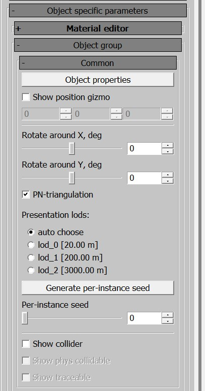
Set of Used Textures and LODs:
Here, you can track all the textures used by the asset as a whole and by each LOD.
Always consider that the more textures an asset uses, the heavier it is to process. You should ask yourself, “Do I really need this many textures?”
Additionally, the number of textures should typically decrease with LODs – polygons with assigned materials are removed.
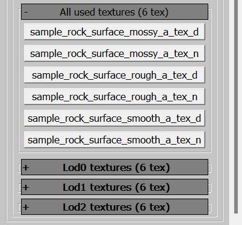
Note
The Properties panel can slightly slow down the loading of assets, especially with heavy render instances containing many submaterials. If you only need to check that each element of a large pack loads without errors (e.g., missing LODs), you might want to temporarily disable Properties for faster asset switching. The hotkey to toggle the panel is P. You can also toggle it via View▸Properties in the menu.
Viewport Settings Panel
By right-clicking on the highlighted yellow rectangle, you can access the following options:
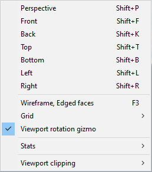
From here, you can explore shortcuts for projection views, model grids, ground grids, and how to enable statistics (Stats▸Show Stats). You can also toggle the display of statistics with or without a black background (Stats▸Opaque Stats).
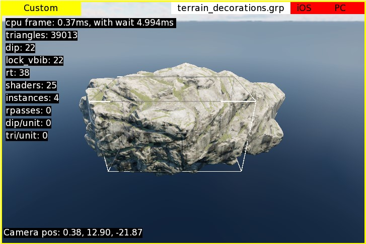
Polygon count is shown by default after all post-effects are applied; the camera position is displayed as [X, Y, Z] coordinates relative to the scene’s center. While these metrics might not be crucial for asset creators, you can customize them to better suit your needs:
Customizing Scene Statistics Display
You can access the statistics settings in two ways:
Right-click on the viewport window and select Stats▸Stats settings.
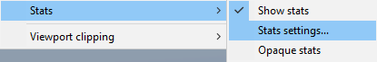
From the Settings menu, choose Stats Settings.
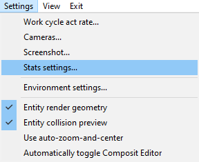
In this menu, you can select which information is important to you.
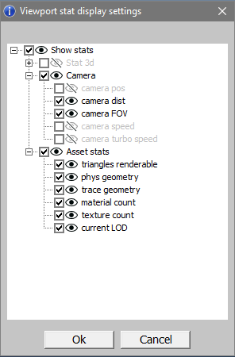
The settings are organized into a two-tier hierarchy, grouped into categories. Disabling a top-level category will disable all its nested options. At the very top, you’ll find the Show stats option, which is the same as the one in the previously mentioned context menu.
Here, you can select the information that matters most to you:
Stat 3d – Is not particularly useful for asset work; it’s more relevant for rendering engineers. You might want to keep
cpu frameenabled for performance tracking.Camera – Is more useful. Knowing the camera position can be handy when working on composites, but more often, you’ll need to track the distance from the camera to the center of the scene. This is where the pivot of the RI (Rendering Instance) is located, simplifying the process of adjusting LOD (Level of Detail) distances – you won’t need to manually calculate the vector from zero to the camera’s coordinates.
camera FOVhelps ensure that the field of view matches the in-game setting and that you’re adjusting LOD distances with the correct camera setup.Asset Stats – Provides the most useful information for asset creators, including:
Number of visible triangles in the asset.
Statistics on physics collisions: the number of meshes, triangles (referred to as faces, but assets are always triangulated), boxes, convex shapes, and vertices.
Similar information for trace collisions. Since there’s no distinction between these in War Thunder, you can disable one of the options – they’ll show identical values anyway.
Number of materials in the rendered geometry.
Number of textures used.
The index of the currently displayed LOD.
Note
Asset statistics are still under development and have known issues:
Tested on render instances; there may be bugs with dynamic models – take the information with a grain of caution.
If an asset lacks a specific parameter, the statistics will show the last known value, such as the number of materials and textures on collisions that are actually zero.
Composites in Asset Viewer are displayed without collisions, so statistics will show zeros for both physics and trace collisions.
In War Thunder, there’s no distinction between phys and trace collisions, but the statistics are output as they are in daNetGame-based games – twice.
Customizing the Grid
In addition to statistics, you can also customize the grid parameters.
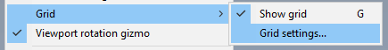
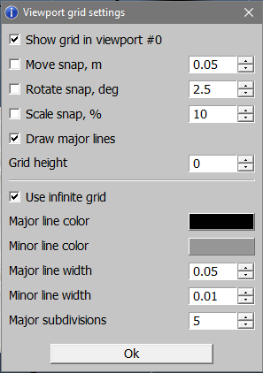
Beyond toggling grid visibility, you can configure snapping parameters (used in the composition editor), height offset, cell size and count, as well as the colors and thickness of the grid lines.
Viewport Rotation Gizmo
Unlike the grid and statistics, the viewport rotation gizmo only has visibility settings.
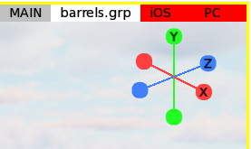
When enabled, it appears in the top-right corner of the viewport(s). Beyond simply displaying the axes, it can also be used for quick navigation:
You can use it as a virtual trackball to rotate the viewport – just hover over the gizmo and start rotating by holding down the left mouse button.
Clicking on an axis letter with the left mouse button automatically rotates the camera along that axis. Unlike hotkeys for projections, this rotation doesn’t switch to an orthographic view; it retains the perspective view.
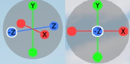
Building Assets
To learn more about what building entails and why it’s necessary, refer to the dedicated article about Resource Building. In short, the game doesn’t directly handle files like DAGs, textures, etc.; it operates on binary files where these resources are compiled. To check your work in-game, you need to compile these resources into the binary files.
General Considerations
It’s important to remember that when you export assets into .dag files, they
are processed by .folder.blk and converted into various types of in-game
objects.
For example, if you export a house with four LODs and an overlay texture, it might look like this:
LOD00: Geometry + Materials; Apex settings.
LOD01: Geometry + Materials.
LOD02: Geometry + Materials; Collision.
LOD03: Geometry + Materials.
Overlay Texture.
In the Asset Viewer and the game itself, these components will be transformed into the following object types:
Render Instance: All LODs with geometry and materials.
_Apex Object: A sliced asset processed by Apex.
_Collision Object: Collision data from
LOD02.Texture: The overlay texture.
When building your changes to view them in the game, it’s crucial to keep track of what exactly you have modified. If your changes only affect a specific type of object (e.g., the render instance), it’s more efficient to build only that object type.
However, if your changes impact multiple object types, it’s usually easier to build the entire directory containing the modified asset. This approach prevents the need to sequentially build each object type one by one.
Selecting and Exporting Assets
You need to choose either an individual asset or the directory containing the asset you wish to export. Your choice depends on what exactly you want to export.
For example:
If only the collision data of a specific asset has been modified, select the “collision object” type.
If only the asset itself (geometry, materials) has been modified, select the “render instance” type.
If both the asset (geometry, materials) and its collision data have been modified, you have two options:
Select the render instance first, followed by its collision object (as separate asset types within Asset Viewer).
Or, select the entire folder containing the asset and its collision data, which allows you to handle everything at once.
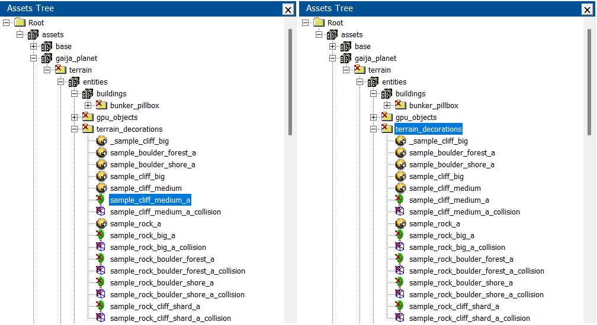
After selecting the asset or directory, right-click on it.
For an individual asset, you’ll be given a single action option – exporting the
package for that specific asset (e.g., terrain_decorations.grp).
For a subdirectory, you’ll have several export options:
Export resources (including subdirectories) – this covers render instances, destructibles, collisions, etc., excluding textures.
Export textures (including subdirectories).
Export everything (including subdirectories).
If you haven’t changed textures, for instance, select only the gameres option. Conversely, if you’ve modified everything, choose to export everything.
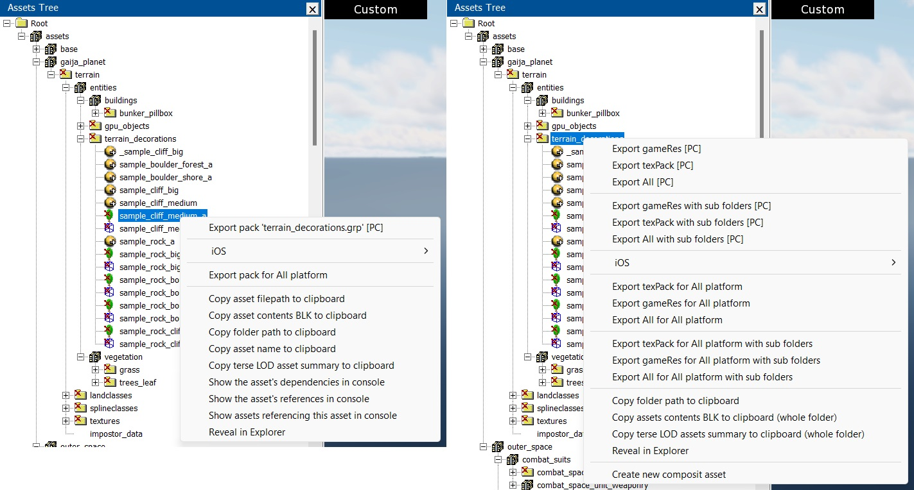
You can monitor the build log in the console. When building resources using Asset Viewer, the build speed is significantly slower compared to using daBuild.
Note
Be mindful of what you select before building.
Exporting an asset won’t automatically include its textures located nearby. Similarly, exporting a directory containing an asset won’t automatically include textures located in a different directory, even if the asset references them.
Nuances
Package Name Conflicts
War Thunder: Package name conflicts are not a significant issue.
daNetGame-based: These conflicts are common. Package names often repeat across different packages. For example, the directory
indoor_stuff(and its corresponding package) exists in both themanmade_common,city_1, andcity_2packages. When you select theindoor_stuffdirectory and choose export all with subdirectories (or select an asset and choose export pack indoor_stuff.grp), allindoor_stuffpackages across these packages will be built.This will result in the build of not just the single modified item, but potentially hundreds of objects. If a full resource rebuild was done recently, unchanged packages will be skipped. However, if a full rebuild hasn’t been done in a while, this process could take considerable time.
HQ Texture Pack Build
Initially, Asset Viewer couldn’t handle the assembly of HQ texture packs. Now it can. When triggering a build from the texture’s context menu, ensure you select the option that includes HQ textures. Note that in the context menu for directories, there’s no separation – both base and HQ texture packs will always be assembled.
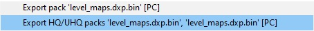
Logging Errors in the Console
By default, all asset-related errors (loggers) will be output to the console. If you need to control these locally, you can add the following block to your
application.blk:logerr_to_con{ assetViewer{ include_re:t=... // only loggers matching this regex will be shown exclude_re:t=... // loggers matching this regex will be excluded } }
Example
logerr_to_con{ assetViewer{ exclude_re:t="(warning: node <occluder_box> from)|(Shader 'land_mesh_combined' not found in bin dump)|(has mesh with 0 faces)|(degenerate tri)|(degenerate mesh node)" // loggers matching this regex will be excluded } }